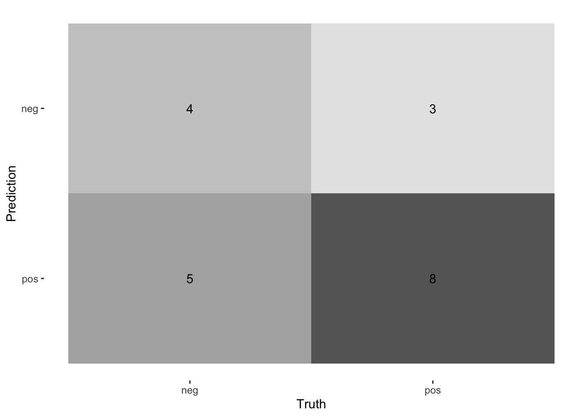

# Load necessary libraries
library(ggplot2)
library(tidymodels)
library(ConfusionTableR) #probably will need to install itConfusion Matrices
On Friday you saw a very rudimentary confusion matrix done with the function table() as we learnt with correlation matrices last Tuesday, we can integrate already developed functions and packages to enhance our analysis
Here is a set of different confusion matrices and an exercise at the end to experiment with what happens when thresholds change.
Lets create a sample dataset - similar to the diabetes dataset with made up probabilities:
Choose your threshold (e.g 0.5 to start)
Confusion matrix using tidymodels
data <- data.frame(actual = actual, predicted = predicted)
cm <- data %>%
conf_mat(truth = actual, estimate = predicted)
cm Truth
Prediction neg pos
neg 4 3
pos 5 8autoplot(cm, type = "heatmap")
ConfusionTableR::binary_visualiseR(train_labels = predicted,
truth_labels= actual,
class_label1 = "Negative",
class_label2 = "Positive",
quadrant_col1 = "#28ACB4",
quadrant_col2 = "#4397D2",
custom_title = "Diabetes Confusion Matrix",
text_col= "black")
Change your threshold to 0.3, what changes?
Now same thing with 0.8